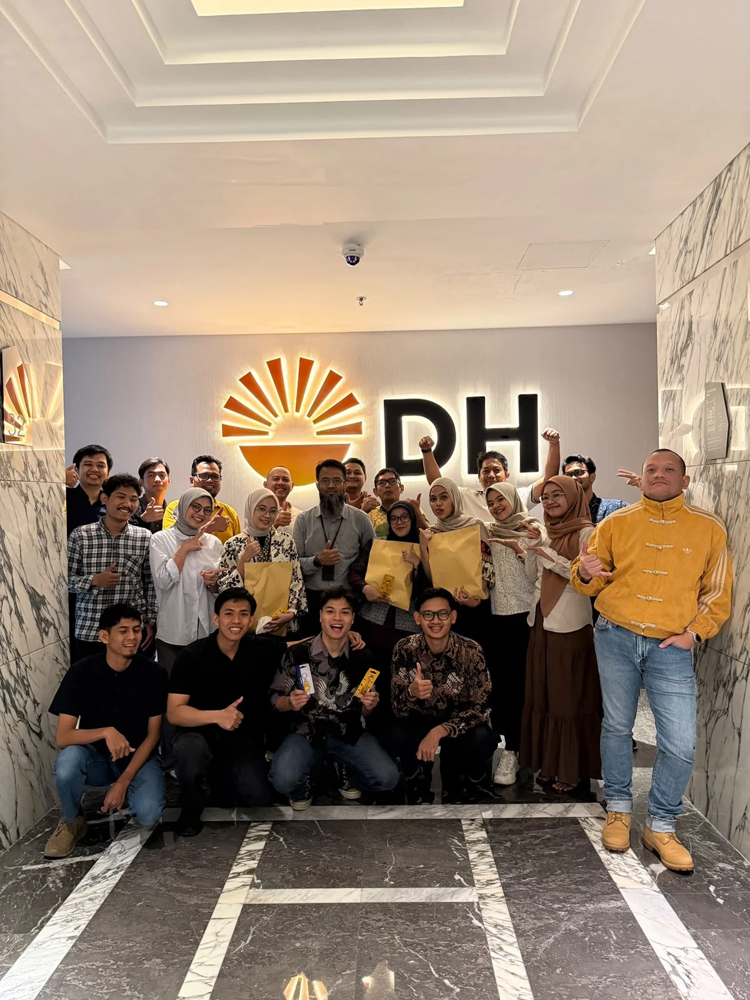
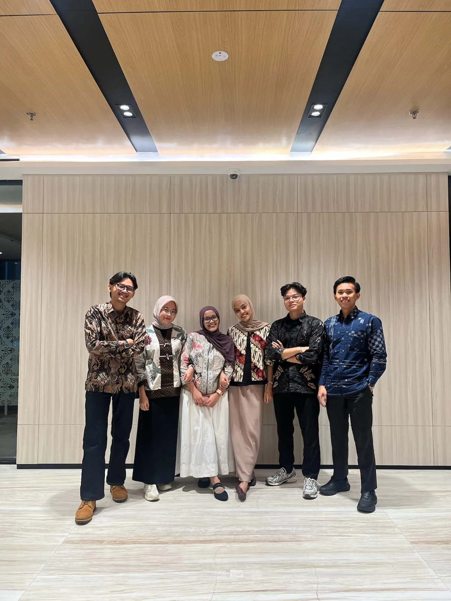
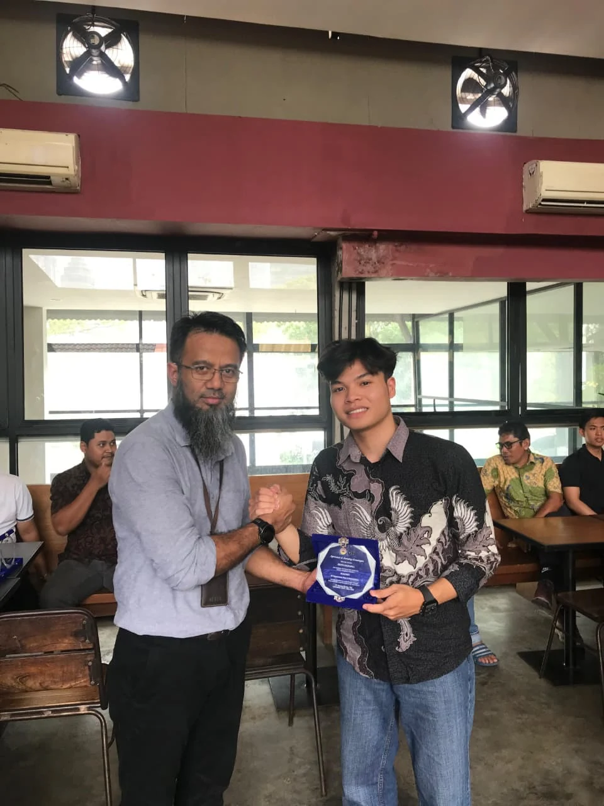
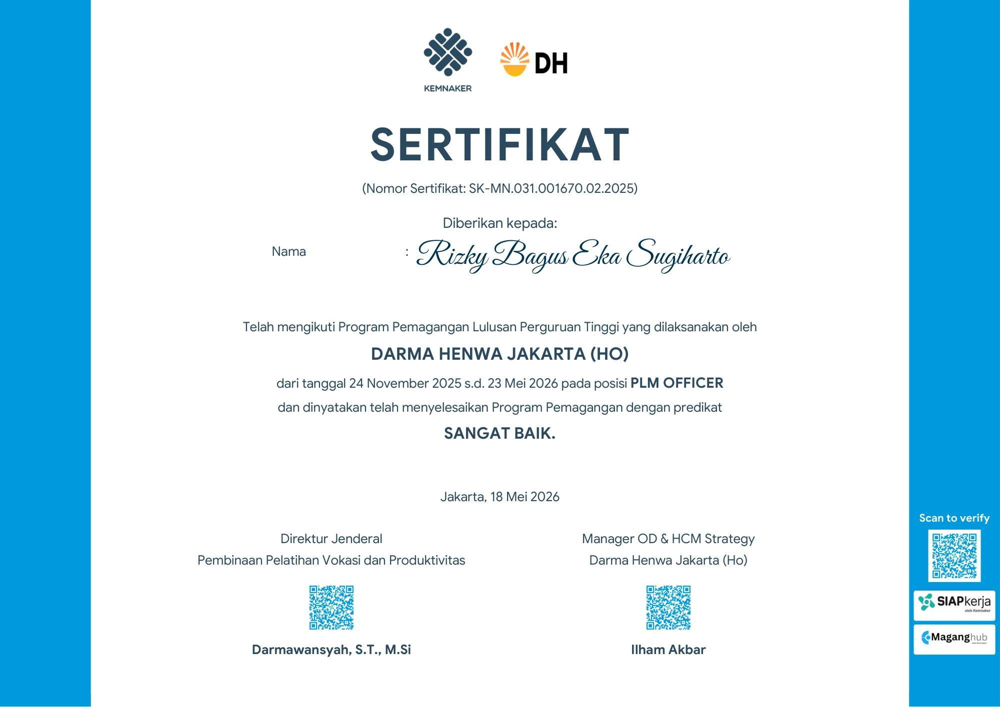

PT Darma Henwa Tbk
Plant & Maintenance, PLM Officer Intern

- Mengelola dan menganalisis data perawatan alat berat dari 3 site di Kalimantan Selatan & Timur untuk mengidentifikasi pareto problem dan tren kegagalan komponen.
- Menghitung serta memonitor KPI maintenance seperti Physical Availability (PA), MTBF, MTTR, dan Scheduled Maintenance (SM).
- Menyusun laporan mingguan terkait Hours Meter (HM), utilisasi unit, dan performa operasional menggunakan Microsoft Excel dan ERP Ellipse.
- Mengembangkan formula dan automasi pengolahan data untuk menghasilkan dataset yang terstruktur dan siap dianalisis.
- Menyusun logika klasifikasi status komponen (In Service & Scrap) dari hingga 20 siklus riwayat penggantian untuk analisis umur pakai komponen.
Lulus program pemagangan dengan predikat Sangat Baik


